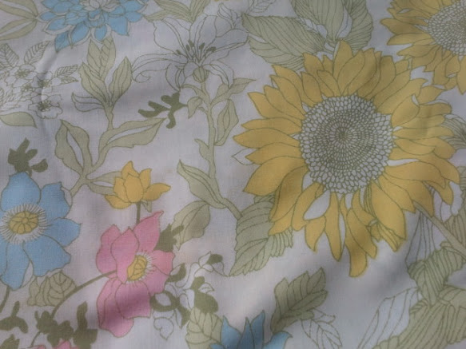
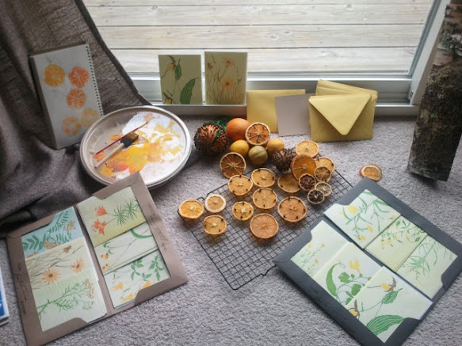

What we've been working on
Invitations
A few images for y'all

- This is the paper & envelopes we have chosen for making our invitations. The paper is called Paper Bag and the envelopes are Curry. The website for the store (which we found in Birmingham) is Paper Source.

- My first attempts at making orange slice stamps to go with our Citrus & Clove theme were with paint. Some of them turned out ok, but we're going to try it with ink pads next. Paint was too squishy.
I have no idea what Brial Shower & Bachelorette Party invitations should look like, but my friend Jeanne had both invitations sent to me at the same time. We should do it like that, just slip in our B-Party invites with the Bridal Shower. We could get together with a few of the people who have offered to help and just buy a bunch of rubber cement and print out some images or what not and make invites one day.

- These are my favorite cards by my favorite artist, Gwen Frostic. She was a Northern Michigan artist and her business is still going. I wish my invitations would look like her stuff. Maybe we can order them for the Bridal Shower? They were actually the first inspiration for what our wedding should look & feel like :)
Wedding Day
- Ceremony Site
- We have chosen a non-religious institution, though we had searched many Catholic, Episcopal, Lutheran, and Presbyterian Churches. I'll show you our favorite Churches just so you can see, but I think you'll find that the place we chose is perfect for us and for our wedding :) Check it out here Old Art Bulding in Leland.
We have options to get married in front of the fireplace by entering from behind the stage or by entering from the French doors, or we could get married in front of the stage. Knowing us though, we're definitely doing it in front of the fireplace. DUH ;D (to see the pictures, click on the Building Use & Policy tab)
 Our favorite church exterior.
Our favorite church exterior.  Our favorite location, in the hills. My aunt was married here.
Our favorite location, in the hills. My aunt was married here. Favorite interior, I attended a service here. Nice people.
Favorite interior, I attended a service here. Nice people.
- Reception Site
The Willowbrook Mill in Northport
We will have this site from 6-11pm on Saturday, Oct 20.
- Dinner
- Ethnic Garden Catering
This lady is willing to work with our other food company to create a full dinner with appetizers/sides/desserts.
- There are two options for our main "dish," either Forno Del Pizza in West Olive, MI will bring two ovens and make fresh pizzas for us, or the North End in Northport (seems more economical) will bring their pizza oven on the trailer down the street. We need to call North End still but Forno is definitely available.
- Favors

Originally we wanted to make clementine pomanders, but I made a whole bunch of them and they all rotted >:| I don't know why. I found dehydrated oranges slices with cloves online and then I made about a million of them. I'm going to use them in your bouquets and place them on the tables as favors. So far that's our only ideas. they can be strung up as Christmas tree ornaments, in a rearview mirror, etc. Whatever.
Bridal Shower
Katie and I are thinking brunch. It should be easy, relaxed. I still haven't called All Saints' yet about using their auditorium (my bad) but we also don't have a date yet, do we? Memosas? Bacon? Quische? Cheese & Fruit? The reason why I'd like to use All Saints' is that it is relatively close to my home, I work there, and many of our downstate guests can easily make it. Plus, the auditorium can seat like 200 people and has a full kitchen, dishes, silverware, chairs, tables, etc which I'm pretty sure we can use. Again, sorry, I need to call.
For some reason, I really love this sheet and either i'm having a dress made from it or we could use it as a tablecloth:

Bachelorette Party
Katie and I discussed this a bit. We considered that both Taylor & Jen will be living out of state in September, so we will try to set aside just one weekend and the Bachelorette Party will be the same day as the Bridal Shower. If that works out. Katie's in charge, obviously. Since Taylor already has a wedding to attend in September, should we also consider an earlier (August?) party?
I do have a couple of requests though:
- Absolutely no Pole Dancing Classes ;D
- This song has to be played at least once.
Pre-Wedding Events
- Dinner & Movie Series
The first one was a success!
- Friday, Oct 19: Welcome at Leelanau Cellars/The Knot
For anyone who is already in town on Friday night, we will meet at Knot Just a Bar in Omena and have some free wine samples at Leelanau Cellars (who will be providing our wine at the wedding dinner)
- Rehearsal and Rehearsal Dinner(?)
Old Art Building will work with us to get us a slot to rehearse the ceremony the night before. We could probably do this before The Knot.
One last piece of inspiration to regarde:

I made this crap using HTML on github.com so that Mike would think I am cool :)